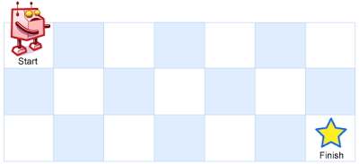

62. 不同路径
← 多维动态规划专题 · 总目录 · 复习清单
题目与约束
一个机器人位于一个 m x n网格的左上角 （起始点在下图中标记为 “Start” ）。
机器人每次只能向下或者向右移动一步。机器人试图达到网格的右下角（在下图中标记为 “Finish” ）。
问总共有多少条不同的路径？
示例 1：

输入：m = 3, n = 7
输出：28
示例 2：
输入：m = 3, n = 2
输出：3
解释：
从左上角开始，总共有 3 条路径可以到达右下角。
1. 向右 -> 向下 -> 向下
2. 向下 -> 向下 -> 向右
3. 向下 -> 向右 -> 向下
示例 3：
输入：m = 7, n = 3
输出：28
示例 4：
输入：m = 3, n = 3
输出：6
提示：
1 <= m, n <= 100- 题目数据保证答案小于等于
2 * 109
Java 完整推导
Java 核心不变量
当前位置方案数来自上方与左方。
完整推导
思路推导
-
直觉与痛点（DFS 穷举的死局）：
第一直觉往往是回溯法（DFS）：站在起点，要么往下走，要么往右走，一直试探到终点。
痛点：随着网格变大，路径数量呈指数级爆炸。比如 20x20 的网格，路径数高达 353 亿条，DFS 会直接超时（TLE）到天荒地老。
-
降维破局（转移方程的推导）：
闭上眼睛想一想：机器人是怎么走到终点
(i, j)的？因为规定了只能向右或向下，所以它必定是从上面一格
(i-1, j)走下来的，或者是从左边一格(i, j-1)走过来的。这就意味着：到达
(i, j)的路径总数 = 到达上方格子的路径数 + 到达左方格子的路径数！完美的状态转移方程诞生：
dp[i][j] = dp[i-1][j] + dp[i][j-1]
-
核心微操（边界基石的奠定）：
有了公式，我们需要推导的“第一推动力”（基底状态）。
- 第一行：机器人要走到第一行的任何一个格子，只能死死地一直往右走。所以第一行所有的格子，路径数都是 1。
- 第一列：同理，走到第一列的任何一个格子，只能一直往下走。路径数也全都是 1。
Java 实现（满分一维空间压缩版）
在常规解法中，我们会开辟一个
m x n的二维数组。但面试面试通常要求优化空间。空间降维奥义：我们在计算第
i行的dp值时，其实只需要用到第i-1行（上一行）的数据和当前行刚刚算出的左边的数据。所以，我们只需要一个一维数组在原地不断滚动更新即可！
import java.util.Arrays;
class Solution {
public int uniquePaths(int m, int n) {
// dp 数组代表到达当前行各个列的路径数
int[] dp = new int[n];
// 🌟 边界初始化：第一行的所有格子，都只有 1 条路径（一直向右）
Arrays.fill(dp, 1);
// 从第二行（i = 1）开始，逐行向下计算
for (int i = 1; i < m; i++) {
// 从第二列（j = 1）开始，逐列向右计算
// 注意：第一列永远是 1（一直向下），所以不用管它，直接从 j=1 开始
for (int j = 1; j < n; j++) {
// 核心状态转移方程在降维后的体现：
// 此时的 dp[j] 在等号右边代表的是“上方格子的路径数”（旧数据还没被覆盖）
// 此时的 dp[j-1] 代表的是“左方格子的路径数”（刚刚在这轮循环算出来的新数据）
dp[j] = dp[j] + dp[j - 1];
}
}
// 算到最后，数组最后一位就是右下角的终点答案
return dp[n - 1];
}
}
复杂度
- 时间复杂度：O(m × n)。我们需要遍历整个网格的大部分格子。
- 空间复杂度：O(n)。我们极其优美地将二维数组压缩成了一个长度为 n 的一维数组。
- 面试追问 1：“如果网格里有一些【障碍物】（机器人走不过去），代码怎么改？”（对应力扣 63 题：不同路径 II）
- 满分抢答（障碍物结界）：只需要在状态转移时加一个极简单的判断！
- 遇到障碍物的格子，它的路径数直接强行设为
0（死路一条，无法通行）。 - 其余的格子照常执行 dp[i][j] = dp[i-1][j] + dp[i][j-1]。因为障碍物已经是 0 了，它自然不会把路径数贡献给右边和下边的格子，DP 逻辑依然完美自洽！ - 面试终极进阶：“你能不用动态规划，在 O(m) 的时间复杂度内用纯数学方法算出答案吗？” - 优化思路（组合数学）：机器人从左上角走到右下角，无论怎么走，它总共要走的步数是恒定的。 - 向下一定要走 m - 1 步，向右一定要走 n - 1 步。总步数是 (m - 1) + (n - 1) = m + n - 2 步。 - 这个问题就变成了：在总共 m + n - 2 次移动中，选出哪 m - 1 次是向下走的？（剩下的必然是向右走的）。 - 这就是极其标准的组合数公式：Cm+n-2m-1。 - 在面试时如果你能先写出 DP，再抛出组合数学公式手写一个阶乘计算，面试官会直接认为你的算法和数学功底深不可测。
Python 完整推导
每格只从上面或左边来
网格中的任意格子 (row, col)，前一步只能位于它的上方或左方。因此到达当前格子的路径数，就是到达上方格子的路径数加上到达左方格子的路径数。
一行一行计算时，一维数组在更新 dp[col] 前保存的是上一行同一列的值，也就是上方路径数；dp[col-1] 刚刚在本行更新，代表左方路径数。把两者相加即可。
以 m = 3, n = 7 看行的变化
第一行没有上方格子，只能一路向右，所以初始 dp = [1,1,1,1,1,1,1]。
- 计算第二行：最左列仍只有一直向下一步，保持 1；第二列变为
1+1=2；第三列用上方旧值 1 加左方新值 2，得到 3。整行最终为[1,2,3,4,5,6,7]。 - 计算第三行：第一列保持 1，后续依次累加左方，最终为
[1,3,6,10,15,21,28]。 - 最终右下角的
dp[6] = 28。
更新过程中的同一个下标有两种含义：等号右边仍是“上一行”，等号左边已经变成“当前行”。这种原地滚动正是二维 DP 可以压缩到一行的原因。
Python 实现
参考来源：代码随想录（programmercarl.com）
旧项目 Python 代码是无记忆递归，网格增大时会指数重复；主解改用同题旧 Java 的一维滚动 DP，source 沿用该条目的旧项目标注。
class Solution:
def uniquePaths(self, m: int, n: int) -> int:
dp = [1] * n
for _ in range(1, m):
for col in range(1, n):
dp[col] += dp[col - 1]
return dp[-1]
初始化与双重循环
dp = [1] * n 同时初始化第一行的每一列：从起点一直向右走，只有一条路径。外层 range(1, m) 从第二行开始，内层 range(1, n) 从第二列开始，因为第一列路径数永远为 1。
dp[col] += dp[col - 1] 是原地运算，但右侧的 dp[col] 先按旧值读取，因此仍表示上方；dp[col-1] 已在本次内层循环中更新，表示左方。
边界与扩展
只有一行时外层不执行，返回 dp[-1] = 1；只有一列时内层不执行，同样返回 1。题面 m、n 至少为 1。若改成含障碍物网格，需要把障碍格显式置 0，不能只沿用全 1 初值。
复杂度
- 时间复杂度：
O(m·n)。 - 空间复杂度：
O(n)。
除第一行外共有约 m·n 个格子参与一次加法，时间 O(m·n)；只保存 n 列的一行状态，空间 O(n)。
力扣原题
C++ 实现
实现来源：代码随想录（programmercarl.com）
class Solution {
private:
int dfs(int i, int j, int m, int n) {
if (i > m || j > n) return 0; // 越界了
if (i == m && j == n) return 1; // 找到一种方法，相当于找到了叶子节点
return dfs(i + 1, j, m, n) + dfs(i, j + 1, m, n);
}
public:
int uniquePaths(int m, int n) {
return dfs(1, 1, m, n);
}
};
Go 实现
实现来源：代码随想录（programmercarl.com）
func uniquePaths(m int, n int) int {
dp := make([][]int, m)
for i := range dp {
dp[i] = make([]int, n)
dp[i][0] = 1
}
for j := 0; j < n; j++ {
dp[0][j] = 1
}
for i := 1; i < m; i++ {
for j := 1; j < n; j++ {
dp[i][j] = dp[i-1][j] + dp[i][j-1]
}
}
return dp[m-1][n-1]
}
C 实现
实现来源：代码随想录（programmercarl.com）
//初始化dp数组
int **initDP(int m, int n) {
//动态开辟dp数组
int **dp = (int**)malloc(sizeof(int *) * m);
int i, j;
for(i = 0; i < m; ++i) {
dp[i] = (int *)malloc(sizeof(int) * n);
}
//从0，0到i,0只有一种走法，所以dp[i][0]都是1，同理dp[0][j]也是1
for(i = 0; i < m; ++i)
dp[i][0] = 1;
for(j = 0; j < n; ++j)
dp[0][j] = 1;
return dp;
}
int uniquePaths(int m, int n){
//dp数组，dp[i][j]代表从dp[0][0]到dp[i][j]有几种走法
int **dp = initDP(m, n);
int i, j;
//到达dp[i][j]只能从dp[i-1][j]和dp[i][j-1]出发
//dp[i][j] = dp[i-1][j] + dp[i][j-1]
for(i = 1; i < m; ++i) {
for(j = 1; j < n; ++j) {
dp[i][j] = dp[i-1][j] + dp[i][j-1];
}
}
int result = dp[m-1][n-1];
free(dp);
return result;
}